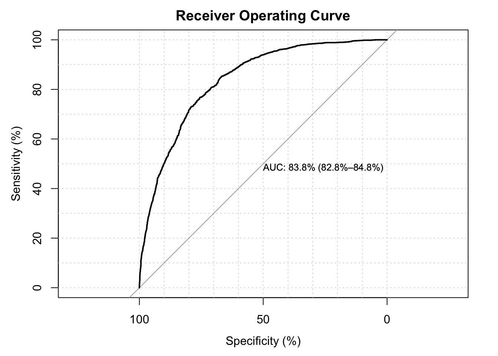
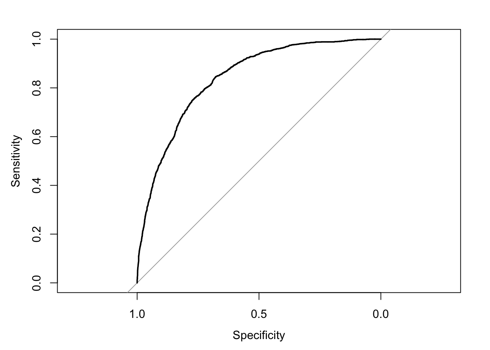
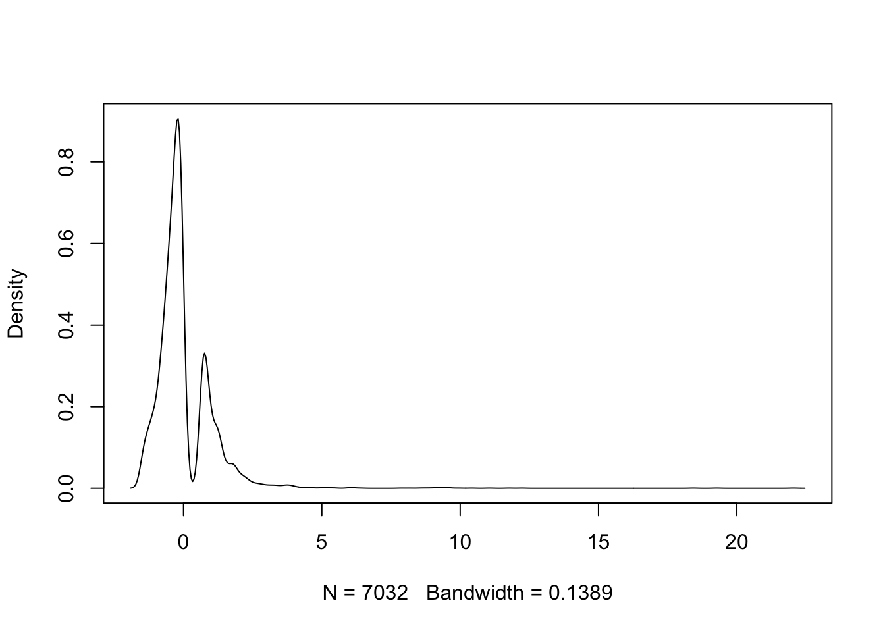
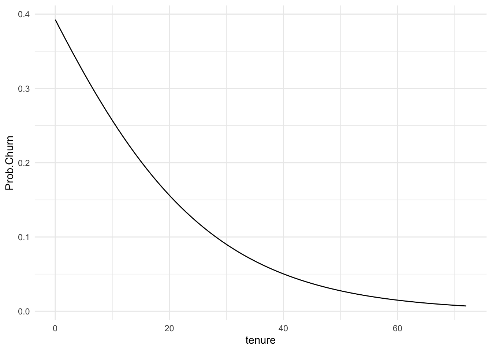
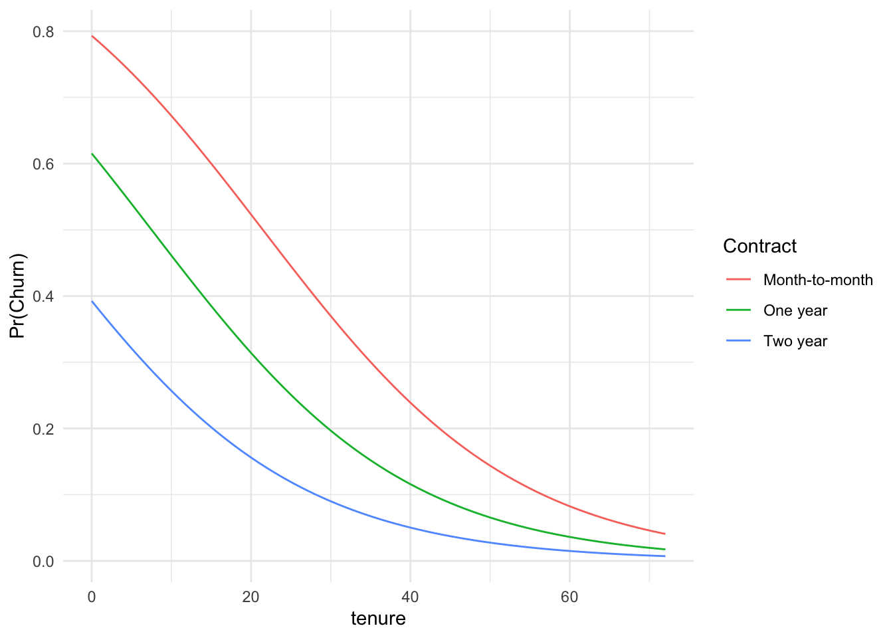
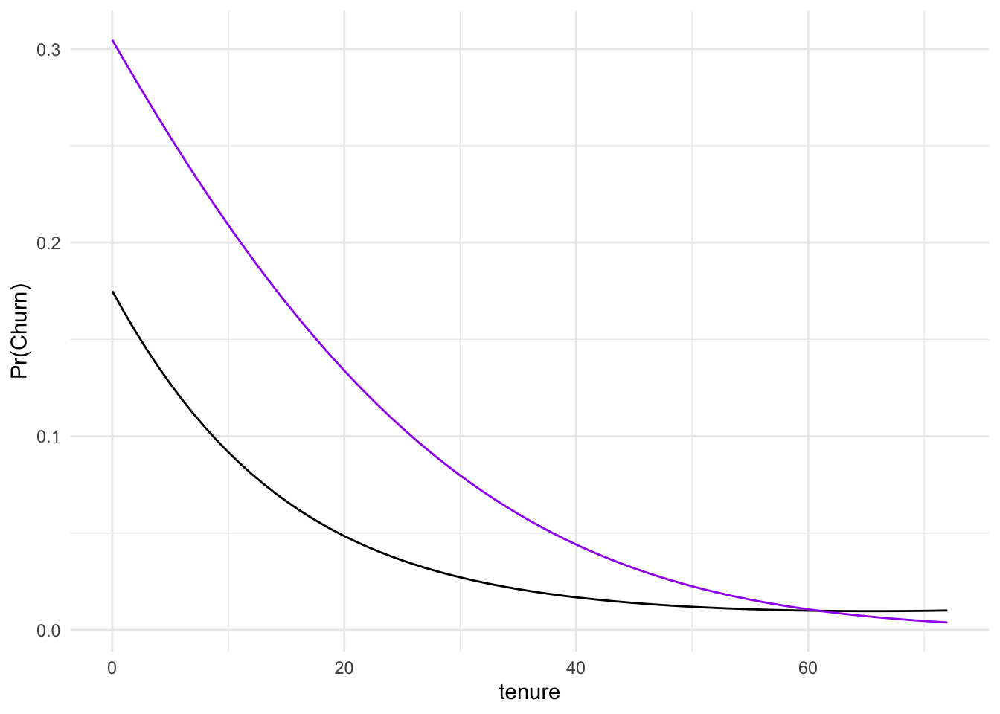

Our third class meeting will focus on Chapter 5 of Handbook of Regression Modeling in People Analytics.
The Skinny
Why not just use a linear model for a binary outcome? It turns out that you can but many people know just enough to think you don’t know what you are talking about if you do. In a very, very dense paper, Jamie Robins (1986, iirc) proves that, as long as the predicted probabilities tend to remain in the region of about 0.2 to 0.8, that is, as long as the model is not all that good, then it really doesn’t matter except that the standard errors you would estimate are likely incorrect. If the model is good for one or the other of the levels, then the behavior in the extremes matters; you could end up with predictions that are less than zero or greater than one and those are invalid as probabilities. Let’s just peak at this example. I will load some data on Churn. For details, look on Kaggle.com – a great source of data.
Churn is a character variable. To turn it to a quantity taking values of zero and one, as.factor() turns the character variable Churn into a factor with two levels, No and Yes. as.numeric() turns this into a number, one or two. I then subtract one to get a variable that takes values zero or one and store it as Churn.Numeric. I will make Churn a function of a few chosen variables; there is more in the dataset that I could work with.
Call:
lm(formula = Churn.Numeric ~ InternetService + tenure + PhoneService +
Contract + TotalCharges, data = Churn)
Residuals:
Min 1Q Median 3Q Max
-0.64458 -0.26256 -0.07269 0.35565 1.12180
Coefficients:
Estimate Std. Error t value Pr(>|t|)
(Intercept) 4.274e-01 1.651e-02 25.892 < 2e-16 ***
InternetServiceFiber optic 2.601e-01 1.268e-02 20.512 < 2e-16 ***
InternetServiceNo -1.476e-01 1.588e-02 -9.290 < 2e-16 ***
tenure -1.909e-03 4.642e-04 -4.112 3.97e-05 ***
PhoneServiceYes -3.823e-02 1.769e-02 -2.161 0.0307 *
ContractOne year -1.385e-01 1.383e-02 -10.018 < 2e-16 ***
ContractTwo year -1.184e-01 1.641e-02 -7.218 5.81e-13 ***
TotalCharges -3.961e-05 5.244e-06 -7.555 4.73e-14 ***
---
Signif. codes: 0 '***' 0.001 '**' 0.01 '*' 0.05 '.' 0.1 ' ' 1
Residual standard error: 0.3812 on 7024 degrees of freedom
(11 observations deleted due to missingness)
Multiple R-squared: 0.2562, Adjusted R-squared: 0.2554
F-statistic: 345.6 on 7 and 7024 DF, p-value: < 2.2e-16
Scientific notation can render tables hard to read. We can adjust R’s internal options to require more leading zeroes before scientific notation is used with scipen in options, e.g.
```{r}options(scipen=6)summary(my.lm)```
Call:
lm(formula = Churn.Numeric ~ InternetService + tenure + PhoneService +
Contract + TotalCharges, data = Churn)
Residuals:
Min 1Q Median 3Q Max
-0.64458 -0.26256 -0.07269 0.35565 1.12180
Coefficients:
Estimate Std. Error t value Pr(>|t|)
(Intercept) 0.427421784 0.016507683 25.892 < 2e-16 ***
InternetServiceFiber optic 0.260067246 0.012678756 20.512 < 2e-16 ***
InternetServiceNo -0.147560579 0.015884435 -9.290 < 2e-16 ***
tenure -0.001908716 0.000464227 -4.112 3.97e-05 ***
PhoneServiceYes -0.038230897 0.017690283 -2.161 0.0307 *
ContractOne year -0.138502281 0.013825977 -10.018 < 2e-16 ***
ContractTwo year -0.118438811 0.016407760 -7.218 5.81e-13 ***
TotalCharges -0.000039614 0.000005244 -7.555 4.73e-14 ***
---
Signif. codes: 0 '***' 0.001 '**' 0.01 '*' 0.05 '.' 0.1 ' ' 1
Residual standard error: 0.3812 on 7024 degrees of freedom
(11 observations deleted due to missingness)
Multiple R-squared: 0.2562, Adjusted R-squared: 0.2554
F-statistic: 345.6 on 7 and 7024 DF, p-value: < 2.2e-16
That is much easier to read. The first thing to note is that there are lots of stars. The model seems to explain variance in the outcome with all the caveats that go with that idea for a 0/1 variable. For example, about 25% of the variance in Churn can be accounted for by these predictors. The model F-statistic assessing the joint hypothesis that all predictors have zero slopes yields an absolutely enormous statistic; the observed F-value is 345.6; 99% of F values with 7 numerator and 7024 denominator degrees of freedom are less than 2.64; a statistic this large is quite unlikely by chance. Moreover, each of the individual t-statistics are greater than 2 in absolute value. Those are the encouraging parts. The residual standard error should give us pause; on average, we are 0.38 away from the observed outcome in the probability metric. That is not great though to make it smaller, the model would have to predict in the extremes. Now, let me put this into a nice table.
Let’s return to my original criticism of using this particular model and assuming that the outcome is a quantity when it only takes two values. Are all of the predictions well-behaved?
```{r}my.lm$fitted.values %>%skim()```
Data summary
Name
Piped data
Number of rows
7032
Number of columns
1
_______________________
Column type frequency:
numeric
1
________________________
Group variables
None
Variable type: numeric
skim_variable
n_missing
complete_rate
mean
sd
p0
p25
p50
p75
p100
hist
data
0
1
0.27
0.22
-0.14
0.08
0.24
0.42
0.64
▆▇▇▇▇
No, there are negative values. To prevent that, we need a different tool; this is the subject of Chapter 5.
We should also examine residuals. Using a variety of tests of linear model assumptions, we find the model lacking in every one but constant variance [homo/heteroscedasticity].
```{r}library(gvlma)gvlma(my.lm)```
Call:
lm(formula = Churn.Numeric ~ InternetService + tenure + PhoneService +
Contract + TotalCharges, data = Churn)
Coefficients:
(Intercept) InternetServiceFiber optic
0.42742178 0.26006725
InternetServiceNo tenure
-0.14756058 -0.00190872
PhoneServiceYes ContractOne year
-0.03823090 -0.13850228
ContractTwo year TotalCharges
-0.11843881 -0.00003961
ASSESSMENT OF THE LINEAR MODEL ASSUMPTIONS
USING THE GLOBAL TEST ON 4 DEGREES-OF-FREEDOM:
Level of Significance = 0.05
Call:
gvlma(x = my.lm)
Value p-value Decision
Global Stat 630.599 0.000e+00 Assumptions NOT satisfied!
Skewness 377.348 0.000e+00 Assumptions NOT satisfied!
Kurtosis 64.207 1.110e-15 Assumptions NOT satisfied!
Link Function 187.439 0.000e+00 Assumptions NOT satisfied!
Heteroscedasticity 1.605 2.051e-01 Assumptions acceptable.
A linear model seems not to work well for these data. Models designed for this task will occupy our attention after a few notes and an overview.
Overview and Comments
What we require is a regression type tool tuned to represent data drawn from a generic binomial distribution. There are actually a few such models that I will introduce you to. There are also some really interesting models that you can fit that build mixtures of the different approaches but we won’t go that far. I should also note that there is a whole class of models on binary classification using trees. If you remember regression trees, you can also build regression trees for binary problems. I will do a bit of this in the end. Before that, some initial observations:
I am using stargazer to produce the tables; they are nice and easy to produce. They have raw html output so I can embed that directly using asis in the code chunks and typesetting to html.
This whole document makes use of fenced code chunks. You can copy and paste this into a new markdown or quarto to play along with the ticks built in.
If one wants to omit a chunk at the top, you would do it with the bracketed part adding option include=FALSE. I always suppress warnings and messages to read (surrounded by curly brackets) r setup, include=FALSE. If you use this option and load libraries, readers will find it hard to figure out how commands may have changed meaning by masking.
Suppose we have some variable that we want to explain, say Churn that has two mutually exclusive and exhaustive alternatives. Customers can either Churn or not. Any given customer is conceptualized as a Bernoulli trial, e.g. \(\pi^{y}(1-\pi)^{1-y}\). With a willingness to believe that every Churn decision is an independently and identically distributed trial in this group of customers, overall churn is a binomial random variable with probability mass function \[P_{y} = {n \choose y} \pi^{y}(1-\pi)^{n-y}\] where
\(P_{y}\) is the binomial probability of \(y\)
\(y\) is the number of successes in \(n\) trials
\(n\) is the number of trials
\(\pi\) is the probability of success in any given trial.
That’s just a fancy way of saying that we have a binomial distribution on our hands. This is known as the canonical distribution for binary data because \(\pi\) is a sufficient statistic – a complete characterization of Churn because it only takes two values. The challenge is that we wish to formulate a regression model for \(\pi\) which will first require that we to grips with the existence of \(\pi_{i}\).
Generalized Linear Models
I need some model that is bounded to zero and one, abstractly, because probabilities are subject to a sum to one constraint. This is where there is some diversity in the representations; let me explain. In generalized linear models, there are two keys to the specification: the family and the link. We have already covered the family; it has to be binomial.
In the theory of these models, presented by Peter McCullagh and John Nelder in 19891, that link for the probabilities is what ties regression to the binomial distribution; we posit that \((1-\pi_{i}) = Pr(y_{i}=1|X_{i}) = 1-F(X_{i}\beta)\) so that \(\pi_{i} = Pr(y_{i}=0|X_{i})= F(X_{i}\beta)\). If \(F\) is some well-behaved probability distribution, then the aforementioned is valid. There are a few ways of actually writing that; the \(\pi_{i}\) could be derived from a normal distribution – called probit –, the distribution that the text focuses on is, the logistic distribution – the model is named logit–, and there are a few others that are somewhat common: the Cauchy, the log-log, and the complimentary log-log. The latter two are asymmetric and mirrors one of the other. What we want to do is to find the estimates of \(\beta\) that maximize the likelihood of the sample we observe.2
A Probit Model
First, a little substitution and some notation. Let me label the normal probability up to \(X_{i}\beta\) to be \(\Phi(X\beta)\) and the probability above \(X\beta\) to be \(1-\Phi(X+{i}\beta)\). I could substitute this into the binomial and obtain the product for the entire sample – this is known as the likelihood.
In English, we want to find the values of \(\beta\) that maximize the log-likelihod of the entire sample.
Estimation of a First GLM
Now to another example with the same measure of Churn. The outcome of interest is Churn. The model specification will call glm, let me examine Churn as a function of InternetService, tenure, PhoneService, Contract and TotalCharges. There is one trick to deploying it, the outcome variable must be a factor type. To make the table nice, let me mutate the type to a factor and then we can model it.
We can do astrology on the tables; read the stars. Fiber optic customers are more likely to Churn and those without internet service are less likely to Churn but both conditions are compared to a third category absorbed into the Constant. What is that category?
```{r}janitor::tabyl(Churn$InternetService)```
Churn$InternetService n percent
DSL 2421 0.3437456
Fiber optic 3096 0.4395854
No 1526 0.2166690
DSL subscribers. It is the first in alphabetical order. That is the default option. That also means that the constant captures those on Month-to-month contracts and without phone service – the omitted category for each. So what do these coefficients show?
The slopes represent the effect of a one-unit change in \(x\) on the underlying distribution for the probabilities. Unless one has intuition for those distributions, they come across as nonsensical. In the table above, let me take the example of tenure. For each unit of tenure [another month having been a customer], the normal variable \(Z \sim N(0,1)\) decreases by 0.028. But what that means depends on whether we are going from 0 to -0.028 or from -2 to -2.028. Remember the standard normal has about 95% of probability between -2 and 2 and has a modal/most common value at zero.
It seems like most scholars I run across don’t actually know this; they tend to stick to stars (That’s why your book plays with odds and logistic regression but I want to start here because y’all have never seen the logistic distribution, except on my poster….) Before that, here’s another way of showing the actual estimated slopes even if their intuition is hard.
Remember scaling from last time and linear models? No rules against that. The two metric variables – tenure and TotalCharges – are now the change in Z for a one standard deviation change in the relevant variable. That’s 2267 dollars for TotalCharges and 24.6 months for tenure.
What the plot makes clear is that basically all of the predictors are deemed important in Churn decisions by conventional standards as all have a very low probability of no relationship/zero slope. But that’s as far as we can get with these unless our audience shares this intuition for probability distributions.
The Trouble with Non-linear Models
I should be clear that the model does have lines; they are just lines inside of a nonlinear function – the F. The generalized linear part means that the interpretation of any one factor will depend on the values of the others. We will have to usually want to generate hypothetical data to understand what is really going on. After a presentation of the remaining models, I will return to my preferred method of interpretation.
Logistic Regression
The logistic distribution is the focus of the textbook chapter. To respecify the model using that, the only change in syntax is the link, we need it to be link="logit" which is the default.
The logistic function is given by:
\[\Lambda = \frac{e^{X\beta}}{1+e^{X\beta}}\]
But the rest is the same; it takes the very general representation and provides a specific probability function for \(F\):
One of the advantages of using the logistic distribution is that you can analytically solve it with only categorical variables. The other is the interpretation of the estimates; the slope is an increment in the log-odds, e.g. \(\ln (\frac{\pi_{y=1}}{1-\pi_{y=1}})\).
If we see these in a side by side comparison, it is obvious that the logistic version is bigger in absolute value across the board. So what do these mean in terms of actual odds of Churn or not?
```{r}exp(my.logit$coefficients)```
(Intercept) InternetServiceFiber optic
1.4521830 3.2282235
InternetServiceNo tenure
0.4652907 0.9393570
PhoneServiceYes ContractOne year
0.4898382 0.4173338
ContractTwo year TotalCharges
0.1685345 1.0003559
All else equal,
The odds of Churning with Fiber optics, as opposed to DSL, increase by 223%.
The odds of Churning with No internet, as opposed to DSL, decrease by 53.5% .
The odds of Churning with No phone service, as opposed to Phone service, are 51% lower.
The odds of Churning decrease by 4% per unit tenure [month].
The odds of Churning increase by 0.04% per dollar of total charges.
The odds of Churning decrease under contracts. Compared to none, about 83% lower odds under a two-year contract and 58% lower odds under a one-year contract.
If you choose to work with odds, then the suggestion to exponentiate the confidence intervals for the odds-ratios is sound.
Taking advantage of the book’s example, I first need to clean up the data, there are a few missing values. Then let me estimate the regression and diagnose it.
```{r}Churn.CC <- Churn %>%select(ChurnF, InternetService, tenure, PhoneService, Contract, TotalCharges) %>%filter(!is.na(TotalCharges))my.logit.CC <-glm(ChurnF ~ InternetService + tenure + PhoneService + Contract + TotalCharges, family =binomial(link ="logit"), data = Churn.CC)library(LogisticDx)# get range of goodness-of-fit diagnosticsmodel_diagnostics <- LogisticDx::gof(my.logit.CC, plotROC =TRUE)```

One very common plot for binary logistic regression is the ROC: the Receiver Operating Curve. It plots specificity against sensitivity. Specificity is the ability, in this case, to correctly identify non-Churners[few false positives is highly specific]; sensitivity is the ability of the test to correctly identify Churners [few false negatives is highly sensitive]. A useful mnemonic is that the presence of the letter f in specificity is a reminder that the False test results are False for the condition, while the t in sensitivity is True test results are True for the condition. Now, turning to the actual provided diagnostics, what all is in there? ?gof for example.
```{r}# returns a listnames(model_diagnostics)model_diagnostics$gof```
[1] "ct" "chiSq" "ctHL" "gof" "R2" "auc"
test stat val df pVal
1: HL chiSq 31.832686 8 9.979186e-05
2: mHL F 16.436041 9 4.896337e-27
3: OsRo Z 3.282456 NA 1.029070e-03
4: SstPgeq0.5 Z 6.656484 NA 2.804560e-11
5: SstPl0.5 Z 5.983933 NA 2.178133e-09
6: SstBoth chiSq 80.116227 2 4.008504e-18
7: SllPgeq0.5 chiSq 45.280618 1 1.707304e-11
8: SllPl0.5 chiSq 29.794958 1 4.802393e-08
9: SllBoth chiSq 54.741365 2 1.297369e-12
This is not a very good model. It fails all the tests. We need to add more predictors; I have those but let’s keep it simple for now. Let me look at two more.
The best fit seems to be provided by the cloglog distribution which is asymmetric.
```{r}library(pROC)predicted <-predict(my.cloglogit, type ="response")auc(Churn.CC$ChurnF, predicted, plot =TRUE)```
Area under the curve: 0.8386

Residuals
```{r}d <-density(residuals(my.logit, "pearson"))plot(d, main ="")```

This is rather poor.
Predicted Probability
I find that the most straightforward way to interpret them is with plots in the probability metric. Let me take the example of tenure.
I will need to create data for interpretation. Let’s suppose we have a DSL user with phone service on a two year contract with average TotalCharges. The last thing I need to know is what values of tenure to show.
```{r}library(skimr)Churn %>%filter(InternetService =="DSL", PhoneService =="Yes", Contract =="Two year") %>%skim(tenure, TotalCharges)```
Data summary
Name
Piped data
Number of rows
467
Number of columns
23
_______________________
Column type frequency:
numeric
2
________________________
Group variables
None
Variable type: numeric
skim_variable
n_missing
complete_rate
mean
sd
p0
p25
p50
p75
p100
hist
tenure
0
1.00
60.52
14.79
0.0
55.00
66.00
71.00
72.00
▁▁▁▂▇
TotalCharges
3
0.99
4733.47
1382.51
130.5
3867.24
4913.88
5879.86
6859.05
▁▂▅▇▇
Now I can create the data and generate predictions in the probability metric of the response.
```{r}Tenure.Pred <-data.frame(InternetService ="DSL", PhoneService ="Yes", Contract ="Two year",TotalCharges =4733.5, tenure =seq(0, 72, by =1))Tenure.Pred$Prob.Churn <-predict(my.logit, newdata = Tenure.Pred, type ="response")```
Now let me plot it.
```{r}ggplot(Tenure.Pred) +aes(x = tenure, y = Prob.Churn) +geom_line() +theme_minimal()```

We could get fancier, too.
```{r}Tenure.Pred.Three <-rbind(data.frame(InternetService ="DSL", PhoneService ="Yes",Contract ="Month-to-month", TotalCharges =4733.5, tenure =seq(0, 72, by =1)),data.frame(InternetService ="DSL", PhoneService ="Yes", Contract ="One year",TotalCharges =4733.5, tenure =seq(0, 72, by =1)), data.frame(InternetService ="DSL",PhoneService ="Yes", Contract ="Two year", TotalCharges =4733.5, tenure =seq(0,72, by =1)))Tenure.Pred.Three$Prob.Churn <-predict(my.logit, newdata = Tenure.Pred.Three, type ="response")ggplot(Tenure.Pred.Three) +aes(x = tenure, y = Prob.Churn, color = Contract) +geom_line() +theme_minimal() +labs(y ="Pr(Churn)")```

A Better (Businessy) Way of Thinking About all of This
I personally believe that the only real way to assess models for use in predictive analytics is to assess them by that criteria. That doesn’t mean fitting inside the extant sample of data, but rather sampling from it and then using the model to predict what is known as a holdout sample. Let me show you what I mean. In this case, let me use the probit and logit models from before and a 75/25 split. This means that I will analyse 75 percent and predict the other 25 percent. I can use join style commands to pull it off pretty simply. I have 7043 rows. So I want 5283 rows of the original data out of that 7043.
Churn FALSE TRUE Total
No 1148 133 1281
Yes 240 236 476
Total 1388 369 1757
Now you might say that the fact we can only get 50 to 55 percent of Churn='Yes' with the model, remember that only 26.5 percent of people Churn overall so we have improved quite a bit over knowing nothing at all but the raw row probability. In this specific case, the probability of Yes in the test set is shown below.
```{r}test %>%tabyl(Churn)```
Churn n percent
No 1284 0.7295455
Yes 476 0.2704545
Quadratic Terms?
What would happen if I assume that the effect of tenure is not a line but instead has some curvature.
```{r, results='asis', warning=FALSE, message=FALSE}mod.train.SQ <- train %>%glm(ChurnF ~ InternetService + tenure +I(tenure^2) + PhoneService + Contract + TotalCharges, family =binomial(link ="probit"), data = .)stargazer(mod.train, mod.train.SQ, type ="html", style ="apsr")```
ChurnF
(1)
(2)
InternetServiceFiber optic
0.703***
0.761***
(0.061)
(0.062)
InternetServiceNo
-0.520***
-0.566***
(0.082)
(0.083)
tenure
-0.030***
-0.043***
(0.004)
(0.004)
I(tenure2)
0.0003***
(0.0001)
PhoneServiceYes
-0.296***
-0.262***
(0.085)
(0.085)
ContractOne year
-0.467***
-0.465***
(0.067)
(0.067)
ContractTwo year
-0.927***
-1.067***
(0.100)
(0.105)
TotalCharges
0.0001***
0.00005
(0.00004)
(0.00004)
Constant
0.086
0.171**
(0.081)
(0.082)
N
5,275
5,275
Log Likelihood
-2,235.094
-2,220.230
AIC
4,486.189
4,458.460
p < .1; p < .05; p < .01
As we can see from the table, the curvature appears to be different from zero though interpreting such a thing ceteris paribus is probably nonsense. Maybe better to see what happens in the metric of the predicted probability. Let me recycle the prediction data I used to draw this in the earlier section. What would the two predictions look like and how do they differ?
```{r}Tenure.Pred$Prob.Churn.2<-predict(mod.train, newdata = Tenure.Pred, type ="response")Tenure.Pred$Prob.Churn.Sq <-predict(mod.train.SQ, newdata = Tenure.Pred, type ="response")ggplot(Tenure.Pred) +aes(x = tenure, y = Prob.Churn.Sq) +geom_line() +geom_line(aes(y = Prob.Churn.2),color ="purple") +theme_minimal() +labs(y ="Pr(Churn)")```

Now let’s predict for the test set, does it really do better?
The option cp controls a complexity parameter that keeps the tree from overfitting the tree. I want to show a fairly complex one so I will change from the default of 0.01 to 0.0025.
Full disclosure, I am cheating a bit here. I don’t really want to explain the fitting of generalized linear models as it most often involves iteratively reweighted least squares. I prefer to motivate them with the far more intuitive likelihood approach though they are not, strictly speaking, identical.↩︎